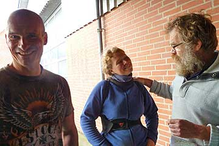
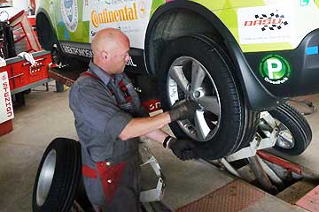

Vi vågnede op i godt vejr efter en regnfuld nat. Hjalte og jeg havde sovet godt hos Troels og Fie i Hjallerup, som om aftenen havde holdt en dejlig fest for de trofaste Moto Mundo motorcykel kørere. I aftenens løb havde vi fået mange gode motorcykelhistorier og planer for nye rejser. Udenfor huset stod Grønne til opladning, så vi nemt kunne køre hele vejen hjem. En smuk tur hvor vi plukkede blomstrende lyng på heden.


Først var vi med Grønne til Automania, en bil event i Silkeborg. På torvet holdt vetearanbiler af alle fabrikater og årgange, med de stolte ejere ved siden af. Bag ved torvet, med adressen Papirtorvet stod elbilerne for sig selv. Ovre ved søerne var der arrangeret et lille racerløb for veteranbiler. Det skabte en masse liv og det var rigtig sjovt at se hvordan kørerne forberedte bilerne og sig selv til løbet.
Ved en reception afslørede klima og energiminister Lykke Friis Vikingegårdens nyudviklede intilligente ladestander. Grønne fik sig lidt strøm, imens vi og de andre gæster nød et powerpoint show og fik sandwich og kaffe med kager. Grønne og Moto Mundo kunne bryste sig af at være en af de første kunder. Vi venter spændt på vores hjemme-ladestander, som gør at vi kan lade når det er billigst, og vi kan vist også vælge vindmøllestrøm. Grønne glæder sig rigtig meget. Indtil da klarer den sig med et almindeligt 380 volt strømstik, med en ledning ud gennem husets kattelem. Så står Grønne derude og spinder.
Gennem det jyske sommerland rullede Grønne op til Enegimuseet ved Tange Sø. Grønne måtte foreløbig blive stående udenfor imens Hjalte og jeg så på de mange interessante ting på museet. Deres samling af elbiler var ikke så imponerende, men der var andre spændende ting at se på - vindmøller, elturbiner, dampmaskiner, radioer, fjernsyn, strygejern, computere, curlere, og tusinde andre ting. Der kunne vi se se hvor hurtigt verden har forandrer sig. For os gamle var det sjovt at gense vores barndoms transistorradioer og køkkenredskaber. For skolebørnene var det nok at se samlingen af stenøkser på nationalmuseet. Men der var også mange sjove ting de selv kunne prøve. Og grønne vil komme tilbage for at blive udstillet i efterårsferien.
Nina.
Vi måtte tidligt op, og efter to ture til Århus, havde Grønne fået en helt ny radio. Men nu var strømmåleren holdt op med at virke- og det vænner vi os ikke til! Vi ved ikke om det er en ledning som Hjalte ikke har fået sat rigtigt på, eller om det er noget som er sket på Vikinggården, som styrer registreringen af Grønnes færden. Det vil forhåbentlig snart blive opklaret... det er for vildt at køre uden strømmåler.
Nina


Fra morgenstunden kørte Grønne til Århus for at få skiftet de dæk som den har kørt på siden Shanghai. Det ene var dog reservehjulet, med en anden dimension, som bilen har kørt på siden en sten ødelagde et dæk i Monte Carlo. Grønne fik sig et dejligt gys da den pludselig steg op mod loftet, og lidt efter kørte Grønne ud fra værkstedet på nye dæk fra Continental- og vi kunne konstatere hvor behageligt det var at køre på fire splinternye dæk- dækstøjen var betydelig mindre, og kørselen var jævnere og blødere. På hjemvejen standsede vi for at se på Art at the Sea
Jeg Grønne har sjældent set så stor en bil. Den kom den kørende op på grunden hvor vi bor. Den havde en mægtig stribet mave som rumlede uafbrudt. Den stak en lang arm ud og begyndte at sprøjte beton, der hvor idas mongolske filttelt skal stå. Hjalte og vores nabo Frede fik travlt med at glatte det ud. Pludselig bakkede den store lastbil ned ad indkørselen og forsvandt. Hmm.
Hilsen fra Grønne

Jeg, Grønne nåede lige akkurat færgen fra Odden til Ebeltoft, selv om jeg måtte køre lidt langsomt for at spare på strømmen. De sidste kilometer var der heldigvis også fartbegrænsning, så jeg ikke behøvede at skamme mig over kun at køre 80. Da jeg kom i land på Djursland var jeg virkelig sulten. Idet vi drejede op af Højagervej var min strømstyrke på nul- jeg frygtede at gå i stå af udmattelse, men nåede dog op til huset. Der blev jeg straks fodret med trefaset strøm, og I kan forestille jer hvordan jeg nød det, ja jeg stod og spandt om kap med Nina og Hjalte, der også var glade for at komme hjem.
Hilsen fra Grønne
Jeg kørte Hjalte til Adventurers Clubs sommerudflugt, som i år gik til Stevnsfortet. Det var hyggeligt lige at hilse på klubben, hvor også Jens Bjerre og Vagn Bjerre Christensen igen var i topform. Jeg opdagede at havde glemt min jakke på Feddet, og måtte kørte tilbage. Grønne var derfor nødt til at lade et par timer før den havde strøm nok til at køre til København. Det gav mig mulighed for at se mere af omgivelserne - stranden, skoven, el-motorcyklerne, hesteden og
den store smukke campingplads med fyrretræer. Om aftenen mødtes Hjalte og jeg i København for at arbejde på at lave en 7 minutters prøvefilm om verdensomrejsen i Grønne. Det var sent før vi kørte til Holmen for at overnatte hos John